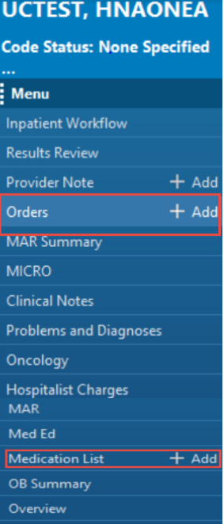
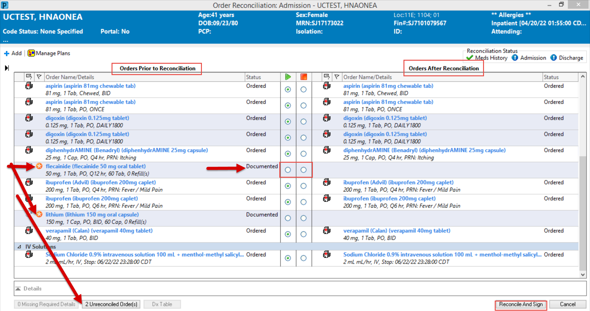
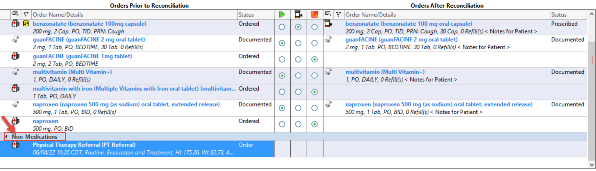
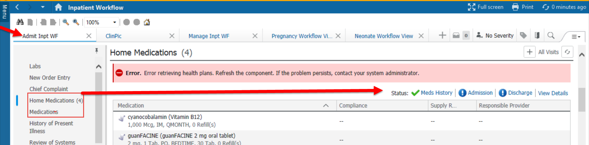
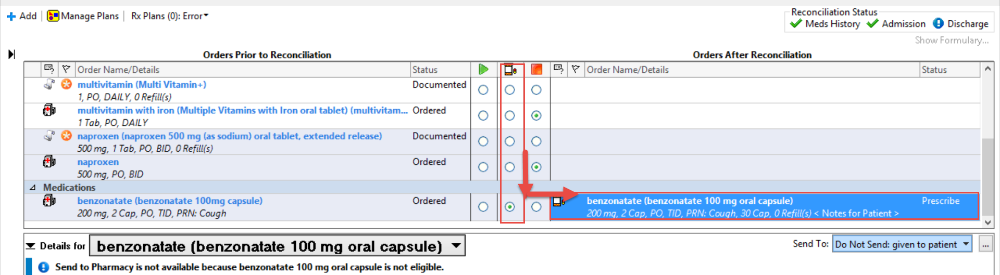
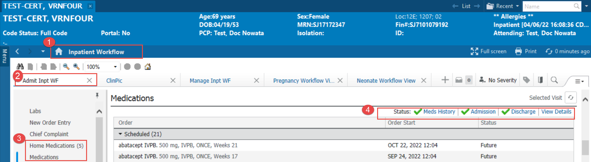

| Overview: The Medication Reconciliation toolbar button is a tool that allows the physician to efficiently reconcile a patient's documented medication list and to quickly and accurately make the appropriate decision on each medication order. Central to the reconciliation process should be a single source of up-to-date medications with all necessary order details. |
Admission Medication Reconciliation (From the Menu) |
NOTE: Medication Reconciliation can be completed from the Menu within PowerChart by choosing either the Orders or Medication List Tabs
- Select the Orders or Medication List tab from the Menu.

IMPORTANT! Admission Reconciliation cannot be completed until Document Medications by Hx has been completed. It can be completed by adding Home Medications or by selecting the No Known Home Medications box or the Unable to Obtain Information box.
- Select the Reconciliation dropdown and click Admission
- Make the appropriate selections from the Reconciliation Action. You can select Continue or Do Not Continue. On the left side you see all the orders that the patient is currently on. Once a selection is made to Continue or Discontinue the patients medications, they will populate to the right side in Orders After Reconciliation.
- If you want to add additional medications for the patients hospital stay select the to open the orders screen and complete the additional orders.
- If there are any orders that have not been reconciled, an orange star icon will appear next to the order. An alert will also appear at the bottom right of the screen which will show the number of missing reconciled orders.
- Once your reconciliation is complete, click Reconcile and Sign at the bottom right of the screen.

IMPORTANT! Prior to completing the Medication Reconciliation, the admission reconciliation status is incomplete when no admission reconciliations have been recorded on the current encounter, or when one admission reconciliation has been recorded but the criteria for the Complete status have not been met.
The admission reconciliation status is complete when all of the following criteria are true:
- There is at least one admission reconciliation recorded on the current encounter.
- All active orders that qualified for reconciliation at the time of the most recent admission reconciliation on the current encounter have been reconciled.
- No new historical medications have been documented on the current encounter between the date and time of the most recent admission reconciliation and the date and time of the first transfer or discharge reconciliation.
NOTE: If an Admission or Discharge Reconciliation is INCOMPLETE, the blue Chasing Arrows icon will appear.
Non-Medication orders are added to a Non-Medications category under the Current Medications section. The Non-Medication category is added to the navigation tree when the first non-medication order is added. Reconciliation options are not available for new non-medication orders.
To add a new non-medication order, complete the following steps:
- In the enhanced medication reconciliation view, click +Add to open the Add Order window.
- Search for and select the order. The order is added to the list under the appropriate clinical category.
- Click Done. The Add Order window closes and validations and alert checking for signing orders occurs.
If you cancel the reconciliation conversation, the system displays the message:All pending actions will be lost. Do you wish to continue? If you select to lose unsigned data, you will lose new orders. If you do not select to lose unsigned data, the system returns to the reconciliation window.

Discharge Medication Reconciliation |
- Click the Reconciliation button in the Medication List of the PowerOrders component and select Discharge from the list

IMPORTANT
- FOLLOW THE SAME STEPS AS ABOVE FOR “ADMISSION RECONCILIATION”
- THERE IS NOW A MIDDLE COLUMN TO ORDER PRESCRIPTIONS FOR THE PATIENT UPON DISCHARGE.
- ALL PRESCRIPTION ORDERS WILL ROUTE TO THE PATIENT’S PHARMACY OF CHOICE.

Workflow Admission and Discharge Reconciliation |
NOTE: Admission and Discharge Medication Reconciliation can also be completed from your Workflow.
- From your Inpatient Workflow MPage you can access Admission and Discharge Medication Reconciliation by selecting either the Medications or Home Medications component.
- Select Admit or Discharge to complete the Reconciliation.


| Need Support? Contact your Clinical Informatics Team Hospital Team: ClinicalInformaticshospitals@sjmc.org and 918-744-3088 (Mon-Fri) AMG Clinic Team: OKTUL-DL-SJCAmbulatoryClinicalInformatics@ascension.org |

© Ascension 2022. All Rights Reserved.